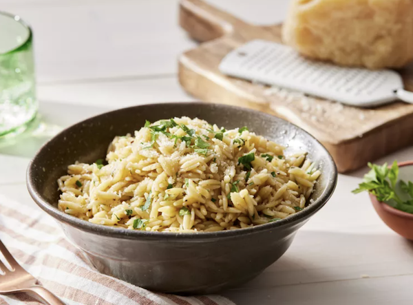

Parmesan Basil Orzo

Description
This light and flavorful orzo dish features tender pasta tossed with grated Parmesan cheese and fresh basil. It’s a simple yet elegant side that pairs beautifully with a variety of mains, offering a creamy texture and a burst of herbaceous freshness in every bite.
Ingredients
- 2 T butter
- 1 1/2 cups orzo
- 3 cups chicken broth
- 1/2 t garlic powder
- 3/4 cup grated parmesan cheese
- 2 T chopped fresh basil
- salt and pepper to taste
Directions
- In a large skillet, combine butter and orzo.
- Sauté over medium heat until orzo is golden brown, stirring frequently.
- Slowly stir in broth and bring to a boil.
- Cover and reduce heat to low.
- Simmer 20 minutes or until orzo is tender and almost all the broth has been absorbed.
- Remove from the heat.
- Stir in basil and parmesand cheese and salt and pepper to taste.
- Enjoy!